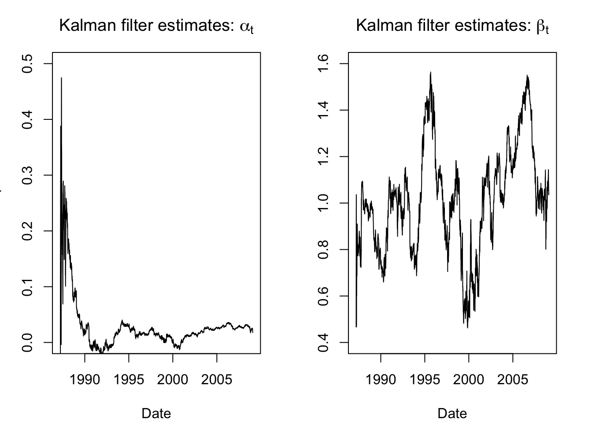
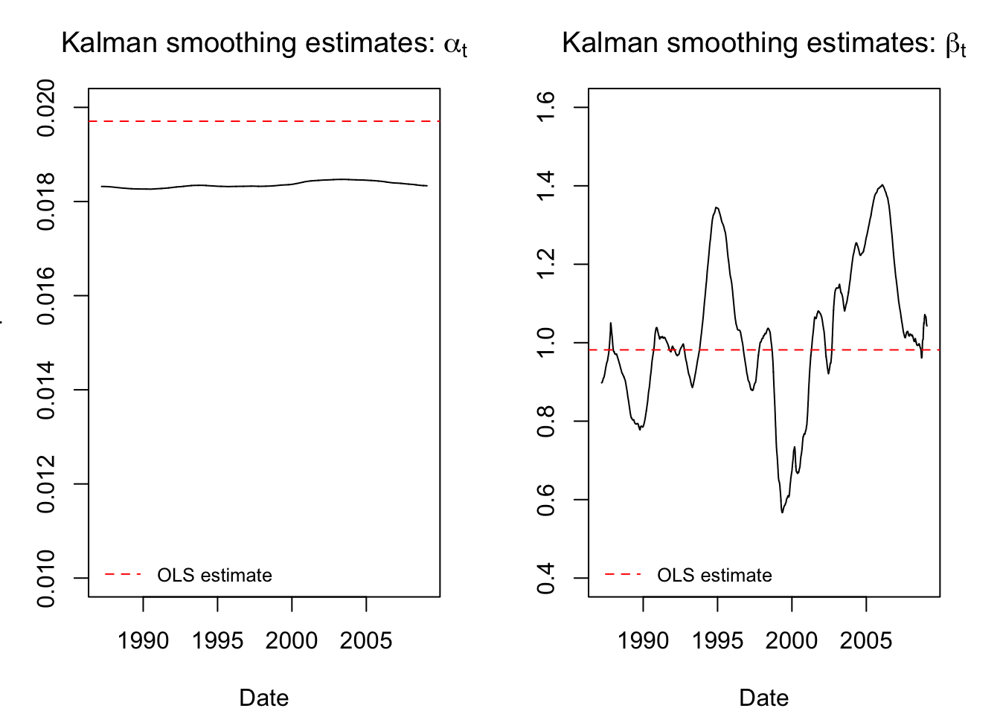
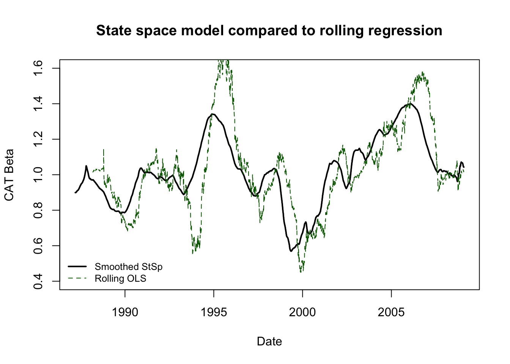

#install.packages('KFAS')
#install.packages('rugarch') #only used to bring in data
library(KFAS)
library(rugarch)State space analysis in R
R users have their choice of several different packages for state space modeling. Two popular choices are KFAS (“Kalman filter and smoothing”) and bsts (“Bayesian structural time series”).
KFASfocuses on frequentist probability interpretations and performs model estimation and forecasting using maximum likelihood methods.bstsleverages the close correspondence between the Kalman filter and Bayesian methods. Users supply prior distributions and the package calculates state estimates and forecasts using MCMC (Markov chain Monte Carlo) methods.
Because I do not presume the reader’s familiarity/comfort with Bayesian models or MCMC methods, I will use the KFAS package here. However, the bsts package is certainly worth exploring and provides some additional functionality beyond the scope of KFAS.
Problem: Caterpillar market sensitivity
Caterpillar Inc. is the largest manufacturer of construction equipment in the world, and has been a mainstay of the Dow Jones Industrial Average (DJIA) for several decades. Although Caterpillar is a large and successful company, construction manufacturing has good years and bad years, and is not consistently cyclical or countercyclical with respect to the broader market:
When the economy is doing well, and corporate and household wealth and income is high, then construction and infrastructure projects tend to be more common, boosting Caterpillar earnings. This effect is highest during “booms”, so Caterpillar leverages market sentiment.
However, Caterpillar can be robust against certain economic downturns, since the federal government often responds by creating infrastructure projects and lowering interest rates, which incentivizes capital investments such as construction. Also, many construction projects take years to contract and complete, so short-term shocks don’t always affect Caterpillar strongly.
These features can pose a challenge for classic econometric models for securities pricing. A very simplified version of the capital asset pricing model (CAPM) or the Fama-French 3-factor model might suggest:
\[r_{\textrm{CAT},t} = \alpha + \beta r_{\textrm{SPX},t} + \varepsilon_t\]
Where:
- \(r_{\textrm{CAT},t}\) is the log-return of Caterpillar on day t
- \(\alpha\) is the average daily amount by which Caterpillar over- or under-performs the market
- \(\beta\) is Caterpillar’s sensitivity to daily changes in the market
- \(r_{\textrm{SPX},t}\) is the log-return of the S&P 500 index on day t
- \(\varepsilon_t\) is an IID Normal error term1
And yet, if Caterpillar is very sensitive to the market in some years and very well protected against market movements in other years, we might draw the wrong conclusion by fitting this model to many years of Caterpillar returns.
We could carve our training data up into many subsamples, but this seems both arbitrary and difficult to stitch back together (for example, consider the sharp discontinuities in \(\hat{\alpha}\) and \(\hat{\beta}\) and even \(\hat{\sigma}^2\) at the break points.)
Instead, let’s try a state space model that allows for dynamic coefficients: every day the intercept and slope are re-estimated and may change slightly throughout the sample:
\[r_{\textrm{CAT},t} = \alpha_t + \beta_t r_{\textrm{SPX},t} + \varepsilon_t\]
Before moving to the modeling part, let’s bring in the data
data(dji30ret)
data(sp500ret)
stocks <- merge(sp500ret,dji30ret,by=0)
rownames(stocks) <- stocks[,'Row.names']
stocks <- stocks[,c('SP500RET','CAT')]
y <- stocks$CAT
xreg <- stocks$SP500RETDefining the state space representation
Let’s phrase these ideas using the state space representation explored more fully on the Kalman filter page:
State: The hidden state at each time step are the parameters \(\alpha_t\) and \(\beta_t\). This suggests a two-dimensional state space: \(\boldsymbol{x}_t = [\alpha_t, \beta_t]^T\)
Observation: In each time period, we observe a new value of Caterpillar’s log-return as well as the broader market. This can be regarded as a one-dimensional or two-dimensional observation, depending on whether you see the market as a deterministic input: \(\boldsymbol{y}_t = r_{\textrm{CAT},t}\)
State transition matrix: We will assume that the “alpha” and “beta” (intercept and slope) for Caterpillar evolve over time as random walks, incremented by the innovation noise. Therefore the transition matrix does not itself evolve the previous state at all: \(\mathbf{F} = \mathbf{I}^2\)
Measurement matrix: We get a little fancy here. Instead of claiming a fixed matrix \(\mathbf{A}\) used for every observation, we will allow the matrix to vary from one observation to the next, and define \(\mathbf{A}_t = [1, r_{\textrm{SPX},t}]\), such that \(\mathbf{A}_t \boldsymbol{x}_t = \hat{\boldsymbol{y}}_t\)
Innovation covariance matrix: In the interest of simplicity and easier algorithmic convergence, we will diagonalize the innovation covariance matrix, meaning that if \(\alpha\) and \(\beta\) change over time, they do so independently. We pick simple starting values and let the fitting function finalize the estimates: \(\mathbf{Q}_\textrm{init} = \left[\begin{array}{cc} 0.001^2 & 0 \\ 0 & 0.001^2\end{array}\right]\)
Observation covariance matrix: Our “measurement error” is the amount by which Caterpillar stock can not be explained by our dynamic betas, i.e. the error term \(\varepsilon\) of the regression. We will let a simple OLS regression give us a starting value and have the fitting function finalize it: \(\mathbf{R}_\textrm{init} = [0.02^2]\)
All the rest of the parameters can be ignored or estimated by our fitting function without further input from us.
\[\begin{aligned} \textrm{State}: \quad \left[\begin{array}{c} \alpha_t \\ \beta_t \end{array}\right] &= \left[\begin{array}{c} \alpha_{t-1} \\ \beta_{t-1} \end{array}\right] + \boldsymbol{\omega}_t\\ \\ \textrm{Observation}: \quad r_{\textrm{CAT},t} &= [1, r_{\textrm{SPX},t}] \left[\begin{array}{c} \alpha_t \\ \beta_t \end{array}\right] + \boldsymbol{\nu}_t \end{aligned}\]
Getting it to work
We have entered an algorithmic territory where experience, problem-solving skills, and a real understanding of both the model math as well as the convergence conditions might be needed to complete our analysis. This can discourage the novice practitioner, who may feel lacking in some or all of these attributes Very few people can claim any real expertise in algorithmic convergence. Even very experienced practitioners often have to debug and explore new solutions in these situations.
One simple way forward would be this:
cat.mod <- SSModel(y ~ -1 +
SSMregression(~ xreg, Q = matrix(c(NA,0,0,NA), nrow=2),
remove.intercept = FALSE), H = matrix(NA))
ols.s2 <- var(resid(lm(y ~ xreg)))
cat.fit <- fitSSM(cat.mod,inits=c(1e-6,1e-6,ols.s2))
cat.fit$modelCall:
SSModel(formula = y ~ -1 + SSMregression(~xreg, Q = matrix(c(NA,
0, 0, NA), nrow = 2), remove.intercept = FALSE), H = matrix(NA))
State space model object of class SSModel
Dimensions:
[1] Number of time points: 5519
[1] Number of time series: 1
[1] Number of disturbances: 2
[1] Number of states: 2
Names of the states:
[1] (Intercept) xreg
Distributions of the time series:
[1] gaussian
Object is a valid object of class SSModel.We define a state space model (using SSModel()) containing a regression with dynamic coefficients (using SSMregression()). We remove the intercept from the fixed (deterministic) part of the model (y ~ -1 + ...), and don’t remove the intercept from the state space part of the model (remove.intercept = FALSE) or else only \(\beta\) would be estimated dynamically. We supply initial guesses for the two covariances matrices as described above. Finally, having specified the model with SSModel(), we then fit the model using fitSSM().
This output text at bottom shows us that the model converged. However, depending on our data we might want to have implemented some more advanced tricks to help the convergence:
Scale the log-returns of Caterpillar and the S&P500 index by 100 for better numerical stability
Have the fitting function (which is actually just a wrapper for the workhorse base R function
optim()) solve for the logs of the variances in \(\mathbf{Q}\) and \(\mathbf{R}\), which would constrain them to be positive, keep them on roughly the same numeric scale, and keep them from seeming to be exactly zero.Constrain the drift rate of \(\alpha\) or even keep it constant, which would limit the freedom of the system and make wild “solutions” less possible.
For a more thorough programming job, consider this code instead:
y2 <- 100*stocks$CAT #scaling for stability
xreg2 <- 100*stocks$SP500RET #scaling for stability
cat.mod2 <- SSModel(y2 ~ -1 +
SSMregression(~ xreg2, Q = matrix(c(NA,0,0,NA), nrow=2),
remove.intercept = FALSE), H = matrix(NA))
update_fn <- function(pars, model) {
model$Q[1,1,1] <- exp(pars[1])
model$Q[2,2,1] <- exp(pars[2])
model$H[1,1,1] <- exp(pars[3])
model}
ols.s2 <- var(resid(lm(y ~ xreg)))
init_pars <- log(c(1e-6, 1e-6, ols.s2))
cat.fit2 <- fitSSM(cat.mod2, inits=init_pars, updatefn=update_fn, method="BFGS")Discussing the results
Now that we’ve succesfully programmed the state space model and tuned the inputs, we can apply the Kalman filter to retrieve our state estimates, i.e. the time-varying “alpha” and “beta” for Caterpillar.
state.ests.raw <- KFS(cat.fit2$model, smoothing = 'none')$att
par(mfrow=c(1,2),mar=c(4,3,3,2)+0.1)
plot(x=as.Date(rownames(stocks)),y=state.ests.raw[,1], type = "l",
main = expression(paste("Kalman filter estimates: ",alpha[t])),
ylab = "CAT Alpha",xlab='Date',ylim=c(0,0.5))
plot(x=as.Date(rownames(stocks)),y=state.ests.raw[,2], type = "l",
main = expression(paste("Kalman filter estimates: ",beta[t])),
ylab = "CAT Beta",xlab='Date',ylim=c(0.4,1.6))
These aren’t bad or uninformative, but they are a little noisy, especially at the beginning of the series as we initialized and started building our trust in the system. Happily, the Kalman filter also allows for smoothing functions. For example, once we have passed forwards through the data, we can then step backwards and reconcile past estimates with the future observations — letting the transition matrix work backward to recompute our estimated earlier states based on current residuals.
state.ests.smooth <- KFS(cat.fit2$model, smoothing = c('state','mean'))$alphahat
par(mfrow=c(1,2),mar=c(4,3,3,2)+0.1)
plot(x=as.Date(rownames(stocks)),y=state.ests.smooth[,1], type = "l",
main = expression(paste("Kalman smoothing estimates: ",alpha[t])),
ylab = "CAT Alpha",xlab='Date',ylim=c(0.01,0.02))
abline(h = coef(lm(y ~ xreg))[1], col = "red", lty = 2)
legend(x='bottomleft',bty='n',legend='OLS estimate',col='red',lty=2,cex=0.8)
plot(x=as.Date(rownames(stocks)),y=state.ests.smooth[,2], type = "l",
main = expression(paste("Kalman smoothing estimates: ",beta[t])),
ylab = "CAT Beta",xlab='Date',ylim=c(0.4,1.6))
abline(h = coef(lm(y ~ xreg))[2], col = "red", lty = 2)
legend(x='bottomleft',bty='n',legend='OLS estimate',col='red',lty=2,cex=0.8)
These smoothed estimates are more credible and interpretable. We see that the stock “alpha” has been smoothed almost flat (the scale of the y-axis is very narrow and the line still looks flat), meaning that it does not seem to vary much over time.2 The “beta” now rises and falls smoothly, giving the impression of market cycles where Caterpillar returns were tied to or divorced from the broader market movements.
If you want to consider the “value-add” of state space models over techniques we have already learned, consider the difference between these smoothed estimates and a more basic technique: rolling OLS regression. We could create a running estimate of the changing “alpha” and “beta” of Caterpillar stock by regressing a year’s returns against the S&P500 index and rolling this regression forward one day at a time through the end of our sample. However,
We would not have an estimate for the first year’s worth of data (the training sample for the first regression)
The data would show jumps and “blips” as extreme observations entered and left the training sample
The results would not be smoothed in any particular way
No common-sense guidelines would constrain the amount of parameter drift from one day to the next.
roll.ols <- sapply(252:5519,function(z) lm(y[(z-251):z]~xreg[(z-251):z])$coefficients[2])
plot(x=as.Date(rownames(stocks)),y=state.ests.smooth[,2], type = "l",
main = "State space model compared to rolling regression",
ylab = "CAT Beta",xlab='Date',ylim=c(0.4,1.6),lwd=2)
lines(as.Date(rownames(stocks))[-1:-251],y=roll.ols,col='darkgreen',lty=2)
legend(x='bottomleft',bty='n',legend=c('Smoothed StSp','Rolling OLS'),
col=c('black','darkgreen'),lty=c(1,2),lwd=c(2,1),cex=0.8)
A more professional-grade price analysis would subtract the risk free rate from both Caterpillar and the market, but we are skipping that for the sake of expediency.↩︎
As a comment on algorithmic convergence, these results use the second (stabler) method. Under the first method, the stock alpha would be smoothed completely flat.↩︎